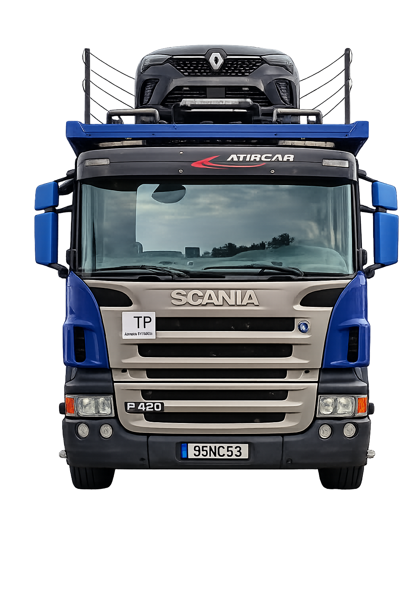

01
Transporte de veículos
Transporte em porta-automóveis para particulares, stands, oficinas e frotas. Recolhas, retomas e entregas programadas com origem, destino e prazo definidos.
Pedir orçamento para transporte de veículosSERVIÇOS DE TRANSPORTE
Do transporte programado ao pronto socorro automóvel. Levamos veículos, máquinas e cargas com o planeamento que cada operação exige.

01 / O QUE TRANSPORTAMOS
Particulares, stands, oficinas, indústria e obras. Escolha o serviço e conte-nos o que precisa de movimentar.
Transporte em porta-automóveis para particulares, stands, oficinas e frotas. Recolhas, retomas e entregas programadas com origem, destino e prazo definidos.
Pedir orçamento para transporte de veículos
Assistência e reboque de automóveis avariados, sinistrados ou sem condições de circulação. Informe a localização e o estado do veículo para confirmar o atendimento.
Pedir assistência de pronto socorro automóvel
Movimentação de máquinas, empilhadores e equipamentos industriais. Avaliamos peso, dimensões e condições de carga e descarga para planear o transporte.
Pedir orçamento para máquinas e empilhadores
Transporte de equipamentos e materiais para a sua obra. Preparação da recolha e da entrega de acordo com os acessos, a carga e a sequência dos trabalhos.
Pedir orçamento para apoio a obras
Planeamento para materiais volumosos, cargas sensíveis e operações que exigem cuidados de amarração. Cada pedido é avaliado pelas características da carga, percurso e condições de acesso.
Planear o transporte de cargas especiais02 / EQUIPAMENTO E OPERAÇÃO
Conheça os meios de transporte da Luso Continental. As fotografias mostram veículos, reboques e equipamentos de apoio às operações.


03 / COMO FUNCIONA
Um transporte bem preparado começa com as informações certas. Conte-nos de onde sai, para onde vai e o que precisa de levar.
Vamos planear o transporteIndique o serviço, a origem, o destino, a quantidade e a data ou urgência do pedido.
A equipa avalia as características da carga, o percurso e os acessos para confirmar os meios e o orçamento.
Depois de confirmar a proposta e a disponibilidade, acertamos a recolha e a entrega consigo.
Diga-nos o que precisa de transportar, a origem e o destino. A nossa equipa ajuda a preparar o seu pedido de orçamento.
ANTES DE PARTIR
Sim. O serviço de porta-automóveis destina-se a particulares, stands, oficinas e frotas, incluindo retomas e entregas programadas. Indique a quantidade, os veículos, a origem e o destino.
Informe a localização, o tipo e estado do veículo, se consegue circular e o destino pretendido, caso já o conheça. Para pedidos urgentes, ligue para +351 933 359 605 e confirme a disponibilidade.
A equipa avalia peso, dimensões e acessos de recolha e entrega. Indique também as condições de carga e descarga e junte fotografias pelo WhatsApp, se possível.
Descreva a carga, peso, dimensões, características de manuseamento, origem e destino. Os meios e a viabilidade da operação são confirmados após avaliação.
São realizadas operações em Portugal continental, com rotas fixas semanais entre a zona de Paredes e Lisboa. Envie origem, destino e prazo para confirmar a operação pretendida.
O formulário prepara um pedido de orçamento para enviar pelo WhatsApp ou e-mail. O serviço fica confirmado após avaliação, disponibilidade e aceitação da proposta.
 Conversar com a equipa no WhatsApp
Conversar com a equipa no WhatsApp